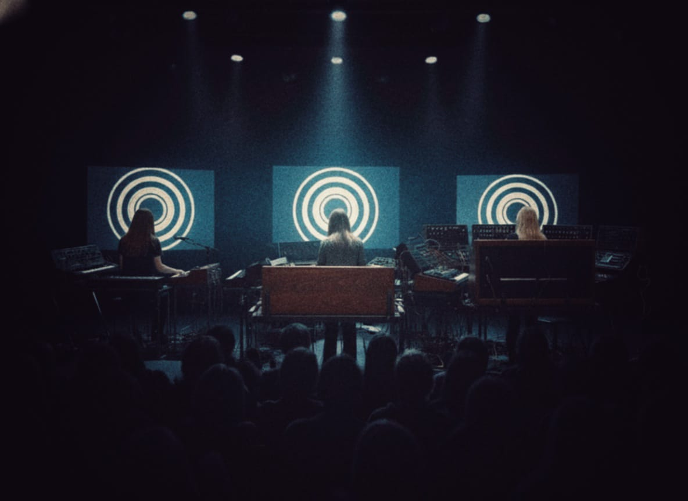

Our Story
Scuola Cosmica Italiana • Trieste


Elena
Conceptual Mind, Composer & Harmonic Structure
Musical Director and Conceptual Mind. Born on March 15, 1952, and trained at the Giuseppe Tartini Conservatory, Elena was the driving force of the band after discovering the music of Wendy Carlos. As the main composer, she was in charge of the harmonic structure and artistic direction of each work. Her role combined classical training with avant-garde. Under her conceptual leadership, the trio maintained an unchanged formation from its creation in Trieste until its dissolution in 1980.

Giulia
Atmospheric Textures
Responsible for Textures and Atmosphere. Born on November 10, 1954, she was the youngest member of the group. Her artistic sensitivity marked the introspective character of the band, being the key piece in the construction of the emotional and spatial character of each composition. Her instrumental versatility provided a unique lyrical dimension through the use of processed voices and atmospheric effects, actively participating until the dissolution of the trio in 1980.

Sofia
Sound Architect & Technical Manager
Sound Architect and Technical Manager. Born on July 28, 1952, Sofia was the technical mind behind the experimental sound of Dream Sequence. Her studies in Electronic Engineering were fundamental for the programming and maintenance of the complex equipment of the trio. As a sound architect, she not only operated synthesizers and the Mellotron M400, but also defined the visual identity of the group through the design of its covers. In the late 70s, she combined her role in the band with individual experimental projects.
Dream Sequence: Architects of the Cosmos (1972–1980)

Hailing from Trieste, Italy, Dream Sequence established itself as a pivotal female trio in the
genealogy of European electronic avant-garde. Composed of sisters Elena and Giulia Leitner
alongside their cousin Sofia Martini, the group transcended the boundaries of academic
experimentation to forge a sonic identity based on the masterful manipulation of analog systems.
Through the use of iconic tools such as the Moog, the Buchla, and the Mellotron, the ensemble
sculpted incredible landscapes and atmospheres that redefined the sound design of the era.
The band's career was marked by a frantic international activity that took them across Europe,
Oceania, and North America. Their live performances, genuine exercises in sonic improvisation,
left nobody indifferent, becoming immersive experiences that humanized technology. With a
globally distributed discography in territories as diverse as Scandinavia, Yugoslavia, or
Canada, their work documents the golden transition of the synthesizer.
After nearly a decade of constant innovation, the trio concluded their journey with a legendary
four-date farewell tour in Japan, culminating in a consensual dissolution in 1980. Today, their
legacy remains an essential testament to the analog era and a key piece in understanding the
evolution of modern exploratory music.